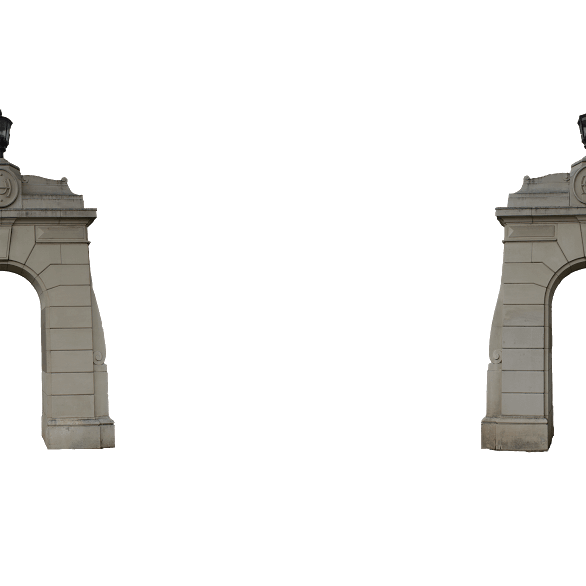

Share your story

SHARE YOUR STORY
If you have a social network you wish to share to that does not
show up here, be sure that the app is installed and configured on your device.
MOVE THE GATES
Look at the gates and imagine where they better would serve the campus, as an entryway to the university and its ideals. Walk to that place, and take a photograph with the gates in their new position. If you like what you see, share your idea via social media. The photo you take will be saved to your phone with the gates superimposed on top.
|
🌄 Select
|
📷 Capture
|

MOVE THE SCULPTURE
How could moving this sculpture to a more-visible area enhance the atmosphere of the university’s athletic complex? If you would like to find out, show us where you think Maka Io should be.
|
🌄 Select
|
📷 Capture
|